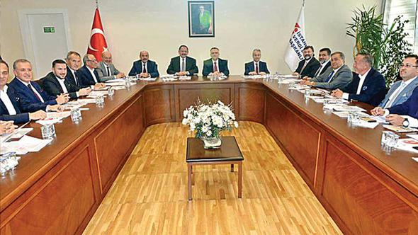
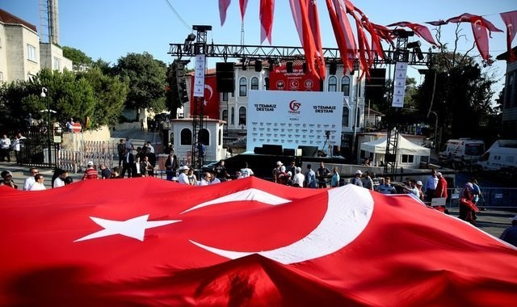

@import "mm_side_menu.html"
HABERLER
Müteahhit ve bakanlardan imar buluşması
Hürriyet20 Temmuz 2017 - 22:22Son Güncelleme : 20 Temmuz 2017 - 22:25
GAYRİMENKUL sektörünün önde gelen temsilcileri Çevre ve Şehircilik Bakanı Mehmet Özhaseki ve Maliye Bakanı Naci Ağbal ile dün İstanbul’da bir araya geldi. 2 saati aşan görüşmede yeni imar yönetmeliği, kentsel dönüşümün aksayan noktaları ve KDV konuları masaya yatırıldı.
İş dünyası tek vücut
Paralimanı15 Temmuz 2017 - 21:05Son Güncelleme : 15 Temmuz 2017 - 21:05
15 Temmuz’un yıldönümünde iş dünyası temsilcileri hainlerin asla başarılı olamayacağını bir kez daha belirtip, dünyaya mesaj verdi
Emlak sektörü darbe girişimini rekor satışla sildi

STAR16 Temmuz 2017 - 21:46Son Günc elleme : 15 Temmuz 2017 - 21:47